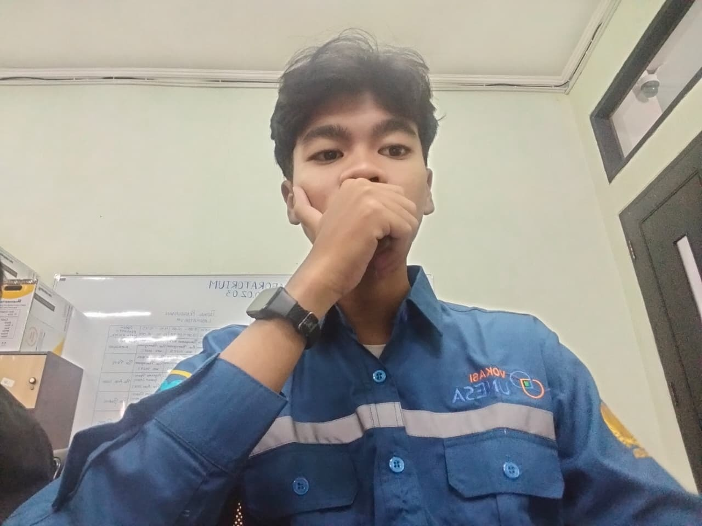

ABOUT ME
Tentang Saya
Saya merupakan mahasiswa aktif D4 Manajemen Informatika Universitas Negeri Surabaya. Saat ini saya berada di semester 3 dan sudah memiliki pengalaman dalam berbagai kegiatan akademik, organisasi, kepanitiaan, administrasi, publikasi, dokumentasi, dan teknologi.
Saya memiliki kemampuan untuk bekerja secara individu maupun dalam tim. Pengalaman dalam berbagai kegiatan membantu saya mengembangkan kemampuan komunikasi, kepemimpinan, tanggung jawab, serta kemampuan menggunakan berbagai tools digital.
MY EXPERIENCE
Pengalaman Saya
Administrasi Apotek
Apotek Kawedanan | 2026 - SekarangMembantu kegiatan administrasi dan pekerjaan yang berkaitan dengan pengelolaan administrasi apotek.
Pengurus OSIS
2022 - 2024Menjadi pengurus OSIS dan terlibat dalam berbagai kegiatan organisasi sekolah.
PMR Tingkat Wira
Divisi AcaraAktif dalam kegiatan PMR dan memiliki pengalaman pelatihan tingkat kabupaten.
Ketua Pelaksana HUT RI
2024Bertanggung jawab sebagai ketua pelaksana kegiatan HUT Kemerdekaan Republik Indonesia.
Wakil Ketua Pelaksana HUT RI
2023Membantu koordinasi dan pelaksanaan kegiatan HUT Kemerdekaan Republik Indonesia.
Ketua Pelaksana Orientasi PMR
2023Mengkoordinasikan kegiatan orientasi anggota PMR dan memastikan kegiatan berjalan dengan baik.
Publikasi & Dokumentasi HUT SMA
2024Bertanggung jawab dalam publikasi, dokumentasi, dan dekorasi kegiatan HUT SMA.
Publikasi & Dokumentasi Class Meeting
2024Mengelola bagian publikasi, dokumentasi, dan dekorasi dalam kegiatan Class Meeting.
Publikasi & Dokumentasi Wisuda
2024Terlibat dalam pengelolaan publikasi, dokumentasi, dan dekorasi kegiatan wisuda.
Duta Sekolah
Putra Putri Favorit Smaker 2024Menjadi bagian dari Duta Sekolah sebagai Putra Favorit Smaker 2024.
MY SKILLS